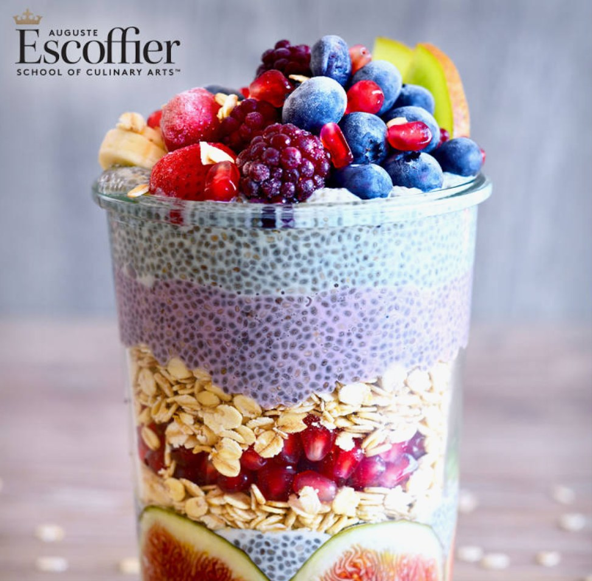

Mini Chia Parfait Pies

Yield: 6 mini pies (4-inch tart pans). Plant-based.
Source dish: the layered chia pudding parfait from the Escoffier post (fig → white chia pudding → pomegranate → granola → purple berry chia → white chia → fresh fruit).
Crust
- 2 cups granola, crushed fine
- 1/4 cup coconut oil, melted
- 1 Tbsp maple syrup
- Pinch of salt
White layer
- 1 cup canned coconut milk
- 4 Tbsp chia seeds
- 1 Tbsp maple syrup
- 1/2 tsp vanilla extract
Purple layer
- 1 cup canned coconut milk
- 4 Tbsp chia seeds
- 1/2 cup blueberries + blackberries, blended smooth
- 1 Tbsp maple syrup
Between layers
- 1/4 cup pomegranate arils
Topping
- 2 fresh figs, sliced
- 1/2 cup blueberries
- 1/2 cup raspberries
- 1/2 cup blackberries
- 1/4 cup pomegranate arils
- 1 banana, sliced
- 1 kiwi, sliced
Steps
- Oven 350°F (175°C). Mix crust ingredients, press firmly into 6 tart pans (bottom and sides). Bake 10-12 min until golden. Cool fully, ~20 min.
- White filling: whisk all ingredients. Rest 10 min, whisk again.
- Purple filling: blend berries into the coconut milk, whisk in the rest. Rest 10 min, whisk again.
- Chill both fillings 4 hrs minimum (overnight best) until thick.
- Line each crust with fig slices.
- Spoon in the white layer. Sprinkle pomegranate arils over it.
- Spoon the purple layer on top.
- Chill pies 1 hr to set firm.
- Top with berries, pomegranate, banana, kiwi right before serving (banana browns if it sits).
Notes
- Prep ~25 min. Chill 4 hrs + 1 hr after assembly.
- Keeps 2 days in the fridge, untopped.
- Pie uses 4 Tbsp chia per cup of milk (parfait standard is 3) for a firmer, sliceable set.